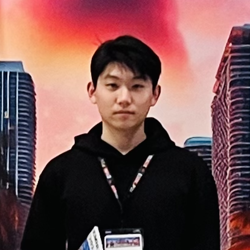
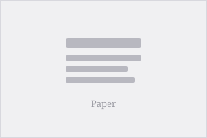

About
Education
Experiences

News
- Two papers accepted to ICLR 2026, congratulations to all co-authors!
- I'm attending NeurIPS 2025 in San Diego. Let's meet up!
- Arrived in Davis to begin my Ph.D. journey.
- Started summer research internship at Tencent.
- I'm attending EMNLP 2024 in Miami. Let's meet up!
- Our paper XRec is accepted to EMNLP 2024.
- Started summer research internship at Yale University.
Publications (Google Scholar)

XRec: Large Language Models for Explainable Recommendation
EMNLP 2024

Learning More with Less: A Dynamic Dual-Level Down-Sampling Framework for Efficient Policy Optimization
ICLR 2026
MobCLIP: Learning General-purpose Geospatial Representation at Scale
ICLR 2026
From Faithfulness to Correctness: Generative Reward Models that Think Critically
Preprint 2025
Breaking Information Cocoons: A Hyperbolic Graph-LLM Framework for Exploration and Exploitation in Recommender Systems
Preprint 2024
Low-Rank Adaptation for Foundation Models: A Comprehensive Review
Preprint 2025
Honors & Awards
Scholarships- Talent Development Scholarship, The University of Hong Kong (2022 & 2023, twice)
- Wong Shek-Yung Memorial Enrichment Award, The University of Hong Kong (2023)
- 3rd place, Simon Marais Mathematics Competition (The University of Hong Kong)
- First Prize, National Mathematics Olympiad (Jiangsu Province)
- First Prize, National Physics Olympiad (Jiangsu Province)
Top